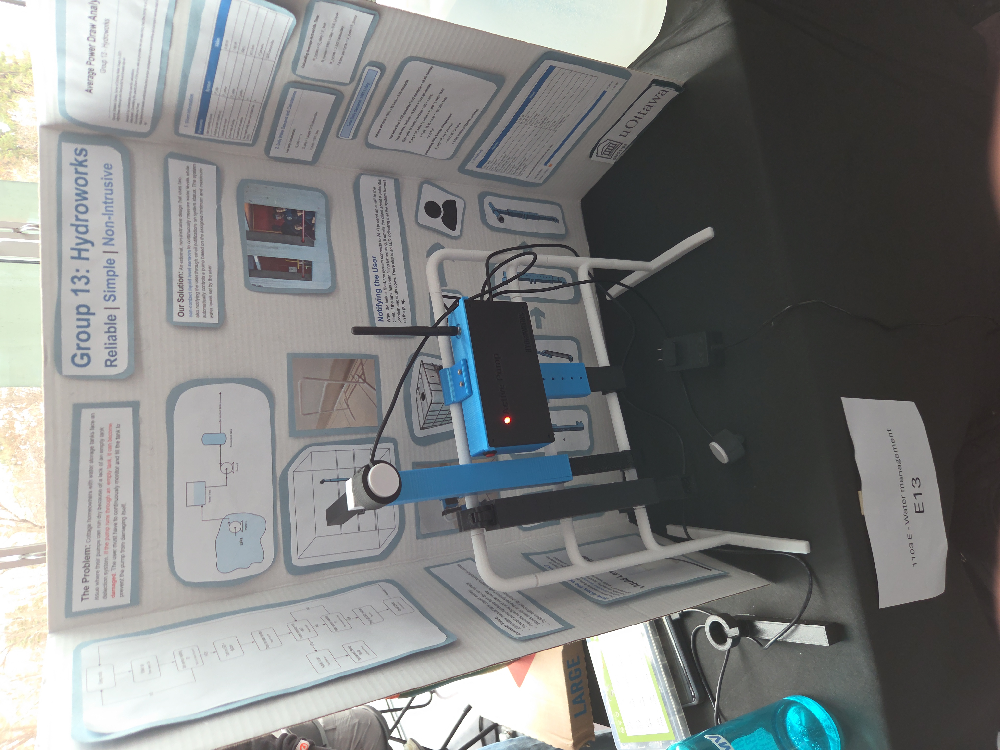
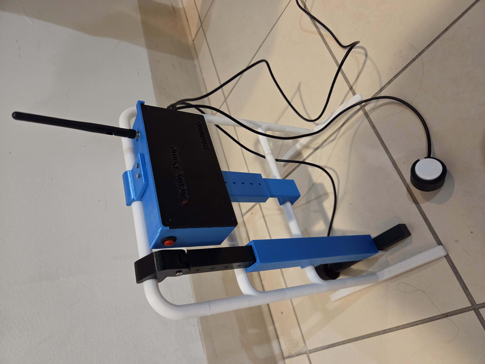
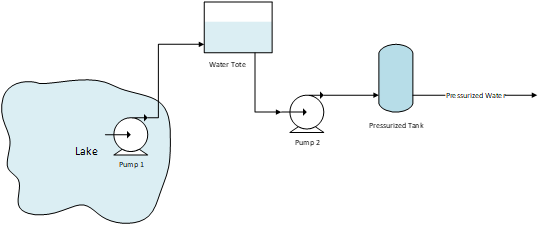
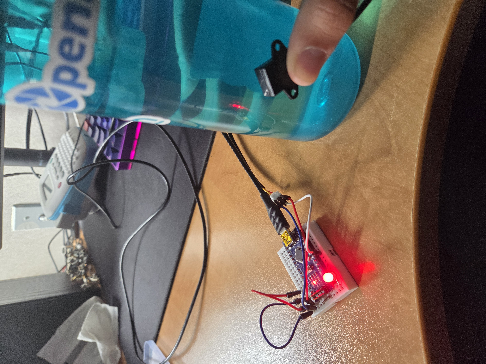
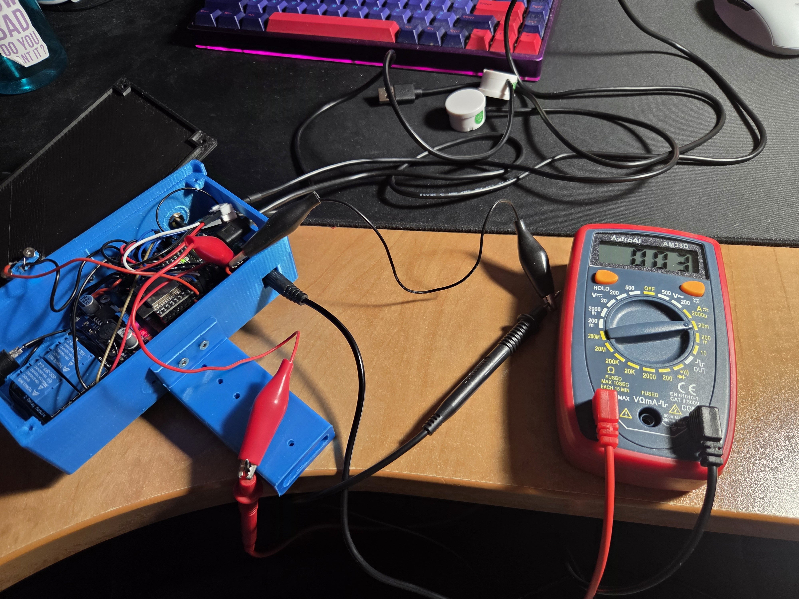
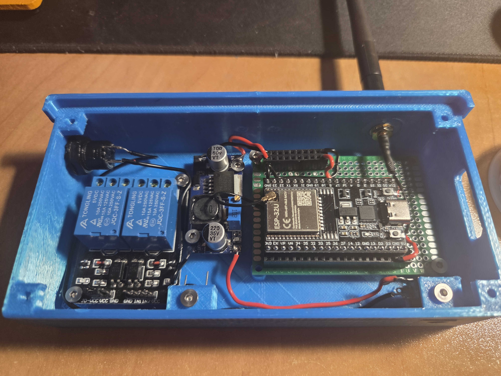
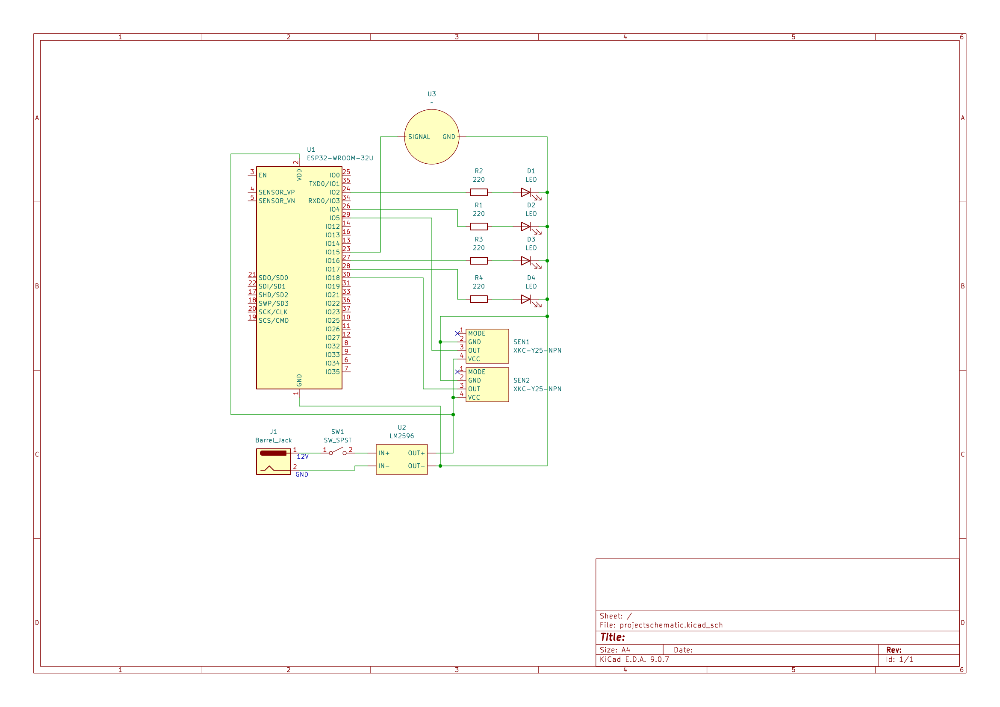
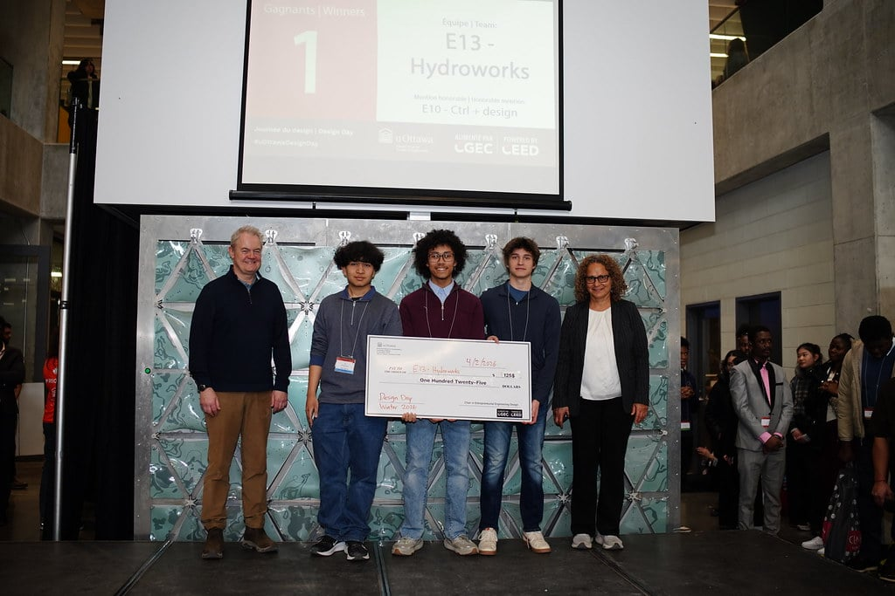

Apr 2026

Group 13, Hydroworks, developed a non-instrusive, reliable, and plug-and-play solution to a water management system. Utilizing non-contact liquid level sensors, the project manages to detect and regulate the level inside a water tank without physically manipulating or entering the water tank. We are a team composing of Alden (me), Adam, Donnel, Raeeze, and Juan.

Remote, off-grid property owners need a way to automatically prevent their water pumps from running dry because manual monitoring is unreliable, leads to expensive equipment failures, and creates constant anxiety about their water supply. Specifically with this client, they are looking for a solution with their water system. Their water system works by pulling water from a lake which is then pumped uphill towards a tote. This tote then can gravity feed into another pump that pressurizes their bladder tank. There is no detection system for when this tote goes empty, so this means that if the second pump that feeds the bladder tank runs with no water running through it, it can damage itself.

This project was a semester long project, and our professor really hammered down one thing: the design process. It helped teach the importance of boiling down a complicated problem into a much neater step-by-step plan. For the first few weeks, we focused on the empathize and define stage where we learned about our client, their needs, and sharpen key questions that will help us deliver a solution. Later on, we started to ideate where the team started to brainstorm and create solutions. By careful section by the team, we were able to come up with a unique solution that fit the criteria and parameters we needed to hit. Next was prototyping, where we started drilling quick and simple models to test the ideas in real life, whether it was simulations on CAD or physical models, it helped us see the practicality of our solution. Near the end of the time we had left, we happened to come to a fully finished prototype which gave us the confidence to give our final pitch.


The entire system is powered by a DC jack on the side of the box, which will be stepped-down to 5V with a DC-DC buck converter so that the electronics can run. The brains of this system uses an ESP32 microcontroller, which was selected because of its low power consumption, built-in Wi-Fi, and ease of use. The ESP32 is programmed to read the water level from non-contact liquid level sensors, which are mounted on the outside of the water tote, and then send this data to a relay module that controls the water pump. The ESP32 is also programmed to send notifications to the user via email when the water level is low and filled up so the user can have comfort in knowing the status of their water system. Some LEDs are also installed to indicate the current status, such as when the water level is below threshold, when water level is above threshold, and when the water pump is running.


The most unique aspect of our project was the utilization of non-contact liquid level sensors, which can detect fluids inside a container from the outside without physically touching the liquid. Our client uses an IBC water tote which are made of HPDE with a wall thickness of ~1" however our tests show that our chosen sensor (XKC-Y26) can reliably detect liquids up to 1.5" thick materials with similar properties as HPDE. This sets us apart because our project is completely outside of the water container and thus no need to open the tote. Installation would also be much easier because our system just snap-fits onto the cage of the tote and the only power would need to be connected. With everything outside, maintenance is also simpler. Another advantage is that we had a antenna connected to the ESP32 to extend the range of the Wi-Fi signal, allowing the system to interface up to 500 meters in clear line of sight (farther than our clients desired distance). The final huge advantage is that we utilized the ESP32s built in sleep mode for moments when nothing is happening to fully optimize power consumption, massively reducing the power draw of the overall system. We have run calculations based on documented tests and found that our system based on the average amount of residents in a cottage would consume ~9.04 Wh/day.
This project that we had been working on throughout the semester was presented at the University of Ottawa's Design Day Winter 2026, where we pitched our project to a panel of judges. We only had 5 minutes to present our product, so we had to make sure we conveyed the problem, showed our solution, and WHY US! Us 5 managed to plan out the pitch by splitting up the presentation into 5 parts, where each of us had a specific aspect we were strong at to present. We managed to win the competition, and we were awarded a cash prize of $125 for our efforts.
